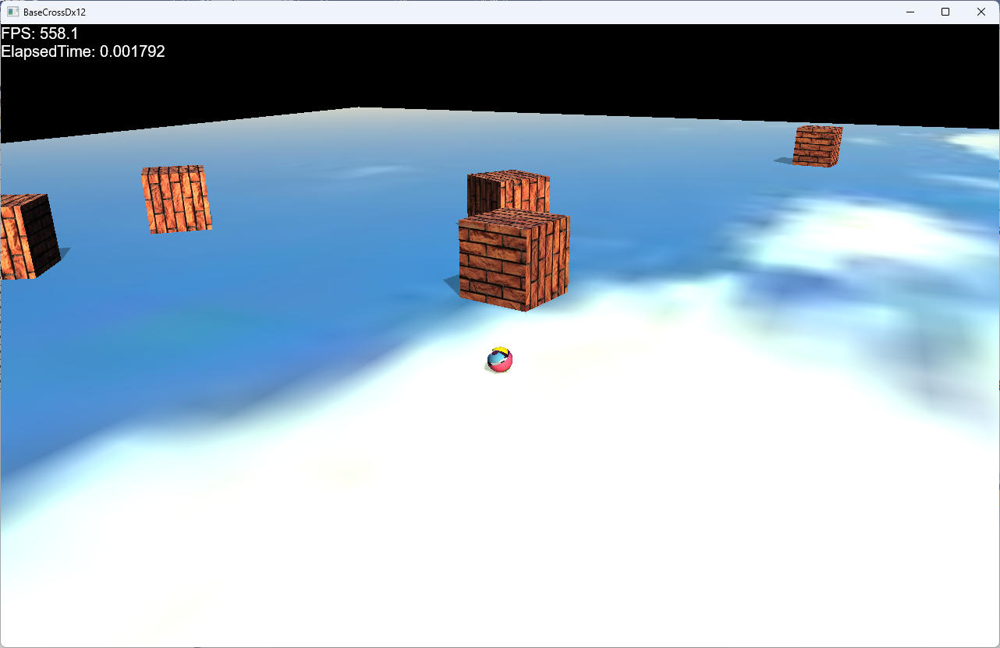

BaseCrossDx12ドキュメント
【Sample102】物理処理
このサンプルは
Samples/Sample102ディレクトリ内にあります。VisualStdioで該当ソリューション（VS2022で
BaseCrossDx12VS2022.sln）を開いてください。ビルド後実行すると、以下の画面が現れます。

BaseCrossDx12における物理処理
BaseCross64では、物理処理を独自のライブラリ側に入れていましたが、
BaseCrossDx12では
PhysXを導入することにしました。それを実装するオブジェクトは
Rigidbodyコンポーネントです。
このサンプルでは起動すると上から立方体が降ってきます。これは
Rigidbodyコンポーネントが設定されたオブジェクトです。まずこのゲームオブジェクトから説明します
FixedBox
このサンプルでの
FixedBoxは
Rigidbodyコンポーネントが実装されています。
その場合、
FixedBox::OnCreate関数は以下のような記述になります。
void FixedBox::OnCreate() {
//Transformコンポーネントを取り出す
auto ptrTrans = GetComponent<Transform>();
auto& param = ptrTrans->GetTransParam();
//PhysX関連
PhysxCreateParam pxParam;
physx::PxBoxGeometry scale(param.scale.x * 0.5f, param.scale.y * 0.5f, param.scale.z * 0.5f);
pxParam.pGeometry = &scale;
AddComponent<RigidbodyStatic>(pxParam);
auto ptrShadow = AddComponent<Shadowmap>();
ptrShadow->AddBaseMesh(L"DEFAULT_CUBE");
auto ptrDraw = AddComponent<BcPNTStaticDraw>();
ptrDraw->AddBaseMesh(L"DEFAULT_CUBE");
ptrDraw->AddBaseTexture(L"SKY_TX");
ptrDraw->SetOwnShadowActive(true);
}
ここでポイントとなるのは
physx::PxBoxGeometry scale(param.scale.x * 0.5f, param.scale.y * 0.5f, param.scale.z * 0.5f);
とスケーリングを
BaseCrossDx12から
PhysXに変換をかける部分です。
x、y、z成分をすべて半分にしています。これは互換性のために必要な処理です。回転と位置はそのままでかまいません。
パラメータを揃えたら
AddComponent<RigidbodyStatic>(pxParam);
でOKです。これで物理演算処理する台座ができます。
WallBox
上から降ってくるオブジェクトは
WallBoxです。
以下は
WallBox::OnCreate関数です
void WallBox::OnCreate() {
auto ptrGameStage = std::dynamic_pointer_cast<GameStage>(GetStage());
//Transformコンポーネントを取り出す
auto ptrTrans = GetComponent<Transform>();
auto& param = ptrTrans->GetTransParam();
//PhysX関連
PhysxCreateParam pxParam;
physx::PxBoxGeometry scale(param.scale.x * 0.5f, param.scale.y * 0.5f, param.scale.z * 0.5f);
pxParam.pGeometry = &scale;
auto pRigDynamicComp = AddComponent<RigidbodyDynamic>(pxParam);
auto pRigDynamic = pRigDynamicComp->GetRigidDynamic();
auto ptrShadow = AddComponent<Shadowmap>();
ptrShadow->AddBaseMesh(L"DEFAULT_CUBE");
auto ptrDraw = AddComponent<BcPNTStaticDraw>();
ptrDraw->AddBaseMesh(L"DEFAULT_CUBE");
ptrDraw->AddBaseTexture(L"WALL_TX");
ptrDraw->SetOwnShadowActive(true);
//ジャンプさせる
pRigDynamic->addForce(physx::PxVec3(0, 10, 0), physx::PxForceMode::eIMPULSE);
}
このオブジェクトは動的に変化するので
RigidbodyDynamicコンポーネントを設定します。
auto pRigDynamicComp = AddComponent<RigidbodyDynamic>(pxParam);
の部分がそうです。
ほかは
FixedBox::OnCreate関数と大きく変わるところがないですが、最後に記述される
//ジャンプさせる
pRigDynamic->addForce(physx::PxVec3(0, 10, 0), physx::PxForceMode::eIMPULSE);
が特徴的です。初期状態で上方にジャンプしてるので、実行時は上から降ってくるような見た目になります。
Player
プレイヤーも
物理処理を実装します。
Player::OnCreate関数です。
void Player::OnCreate() {
GetStage()->SetSharedGameObject(L"Player", GetThis<Player>());
//Transformコンポーネントを取り出す
auto ptrTrans = GetComponent<Transform>();
auto& param = ptrTrans->GetTransParam();
//PhysX関連
PhysxCreateParam pxParam;
physx::PxSphereGeometry scale(param.scale.x * 0.5f);
pxParam.pGeometry = &scale;
pxParam.staticFriction = 1.0f;
pxParam.dynamicFriction = 1.0f;
pxParam.restitution = 1.0f;
auto pRigDynamicComp = AddComponent<RigidbodyDynamic>(pxParam);
auto pRigDynamic = pRigDynamicComp->GetRigidDynamic();
auto ptrShadow = AddComponent<Shadowmap>();
ptrShadow->AddBaseMesh(L"DEFAULT_SPHERE");
auto ptrDraw = AddComponent<BcPNTStaticDraw>();
ptrDraw->AddBaseMesh(L"DEFAULT_SPHERE");
ptrDraw->AddBaseTexture(L"TRACE_TX");
//透明処理
SetAlphaActive(true);
//カメラを得る
auto ptrCamera = std::dynamic_pointer_cast<MyCamera>(GetStage()->GetCamera());
if (ptrCamera) {
//MyCameraである
//MyCameraに注目するオブジェクト（プレイヤー）の設定
ptrCamera->SetTargetObject(GetThis<GameObject>());
ptrCamera->SetTargetToAt(Vec3(0, 0.25f, 0));
}
}
プレイヤーはコントローラーに反応するので、
Player::OnUpdate関数は以下です。
void Player::OnUpdate(double elapsedTime) {
//コントローラチェックして入力があればコマンド呼び出し
m_InputHandler.PushHandle(GetThis<Player>());
MovePlayer();
}
これではよくわからないのですが、実際に物理演算の処理をしているのは以下です。
void Player::MovePlayer() {
float elapsedTime = (float)Scene::GetElapsedTime();
auto angle = GetMoveVector();
//RigidbodyDynamicコンポーネントを取り出す
auto ptrRigid = GetComponent<RigidbodyDynamic>();
auto pRigDynamic = ptrRigid->GetRigidDynamic();
if (angle.length() > 0.0f) {
Vec3 tmpVelo = angle * m_Speed;
pRigDynamic->setLinearVelocity(bsmUtil::ToPxVec3(tmpVelo));
}
else {
pRigDynamic->setLinearVelocity(bsmUtil::ToPxVec3(Vec3(0)));
}
}
これで単純でありますが、物理演算を
BaseCrossDx12に実装するための方法を解説しました。